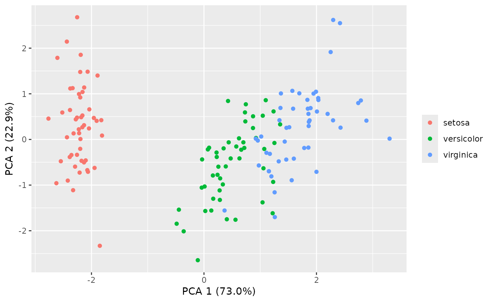
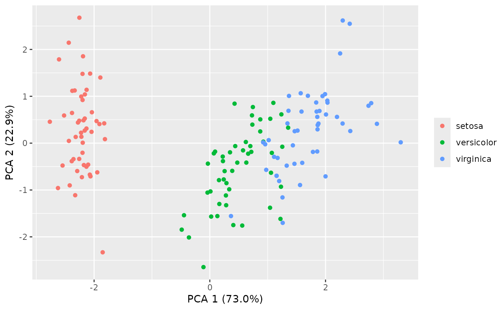
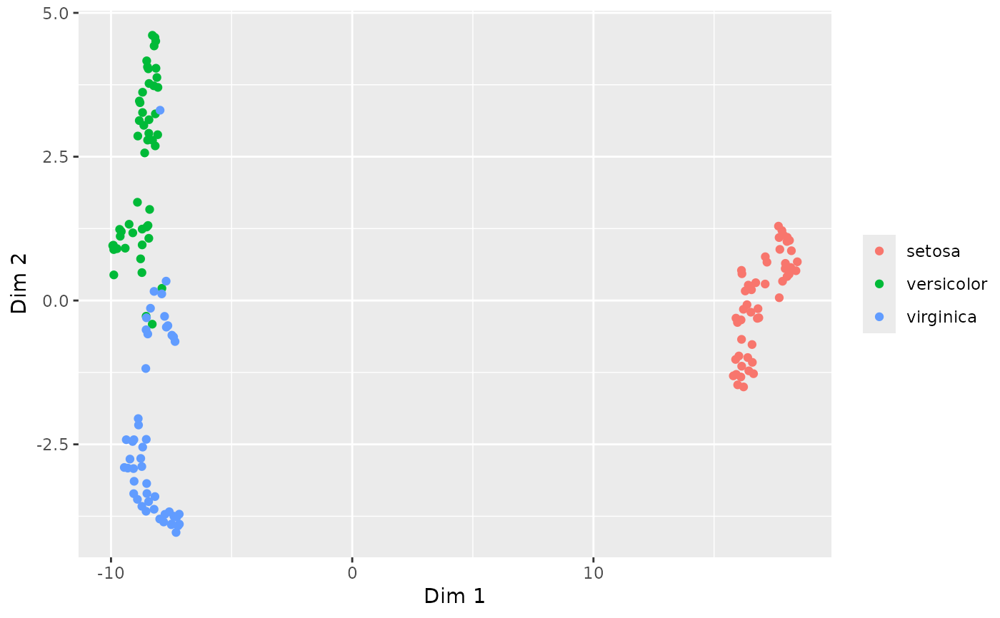
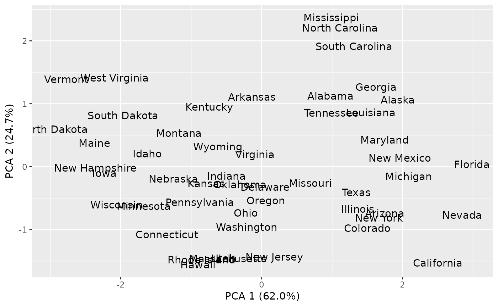
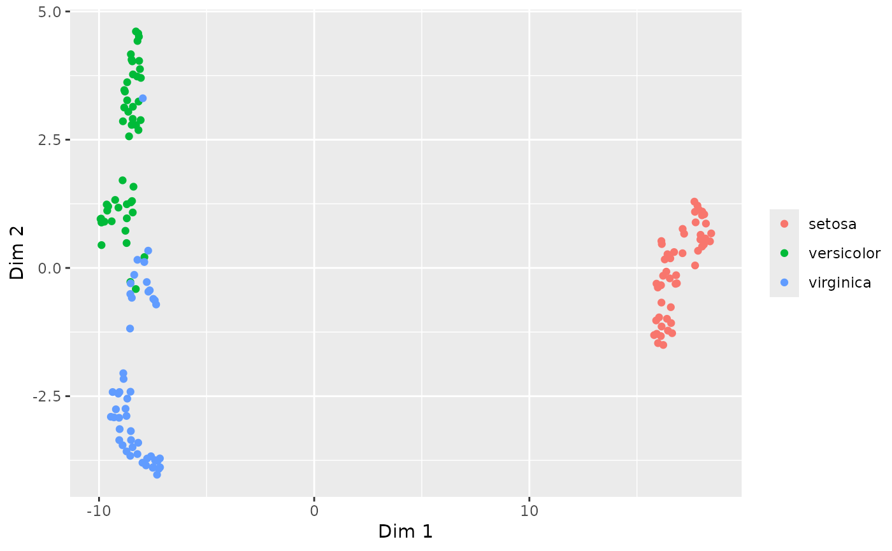
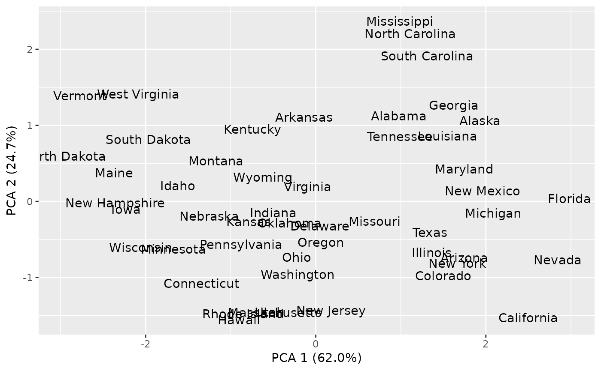
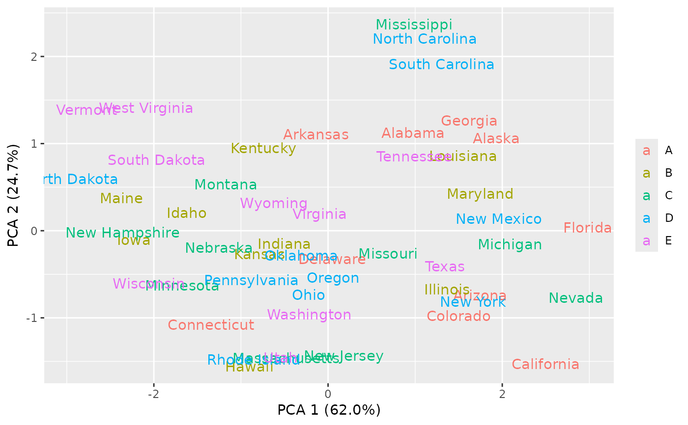
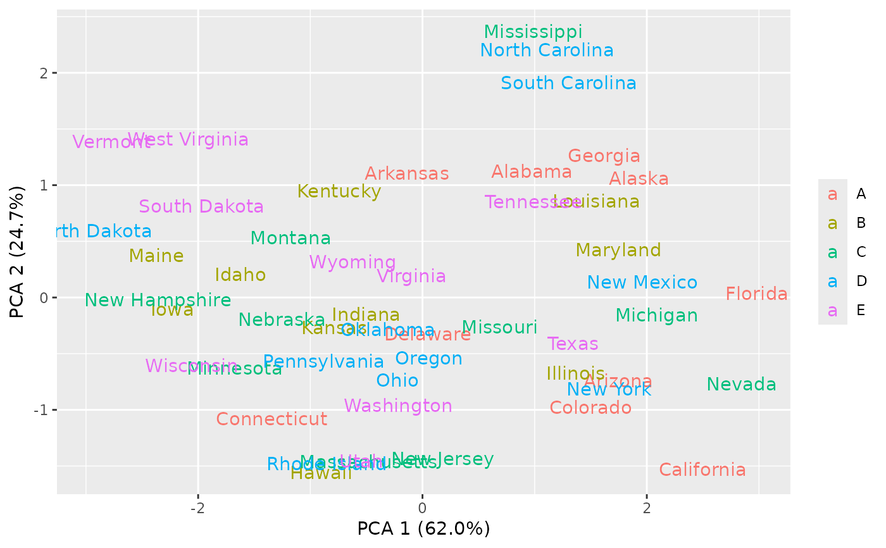
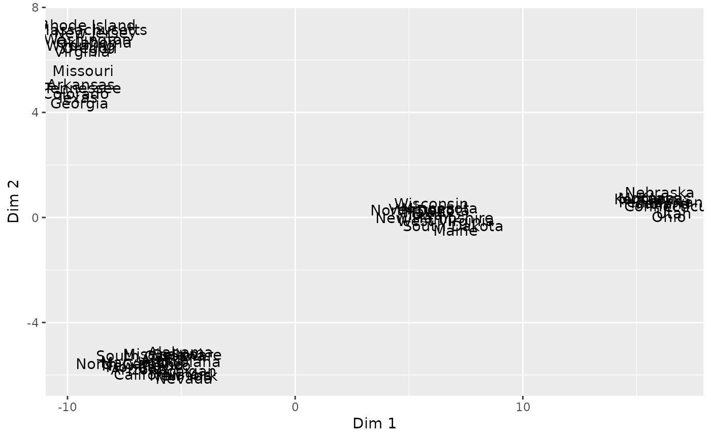
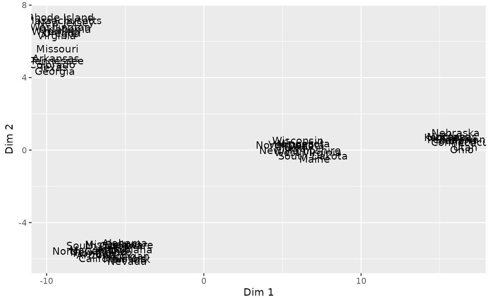

Make a PCA/tSNE/UMAP plot
pca_plot.RdThe function allows the passing of some parameters to Rtsne/umap:
Rtsne: perplexity
umap: nn (number of neighbors)
Usage
pca_plot(
X,
grp,
txt = FALSE,
method = c("pca", "tsne", "umap"),
dims = 2,
gg = TRUE,
ellipse = FALSE,
legend,
repel = FALSE,
plot = TRUE,
...
)Arguments
- X
A numeric matrix
- grp
Optional grouping factor to color instances by
- txt
Use rownames as labels instead of dots (default: false)
- method
How to carry out dimension reduction (pca/tsne/umap)
- dims
Dimensions to return (for tsne)
- gg
Use ggplot2? (default: true)
- ellipse
Draw mvn-ellipses around groups? (default: false, only available for ggplot)
- legend
Include a legend (default: true)
- repel
If
gg=TRUEandtxt=TRUE, useggrepel::geom_text_repel()? (default: false)- plot
Create plot? (default: true)
- ...
Further arguments to
plot()
Examples
# Plots of the iris data
pca_plot(iris[,1:4])
 pca_plot(iris[,1:4], grp=iris[,5])

pca_plot(iris[,1:4], grp=iris[,5], ellipse=TRUE)
pca_plot(iris[,1:4], grp=iris[,5], method='tsne')
pca_plot(iris[,1:4], grp=iris[,5])

pca_plot(iris[,1:4], grp=iris[,5], ellipse=TRUE)
pca_plot(iris[,1:4], grp=iris[,5], method='tsne')
 pca_plot(iris[,1:4], grp=iris[,5], method='umap')

# What pca_plot returns if plot=FALSE
head(pca_plot(iris[,1:4], method='pca', plot=FALSE))
#> PC1 PC2 PC3 PC4
#> 1 -2.257141 0.4784238 -0.12727962 -0.024087508
#> 2 -2.074013 -0.6718827 -0.23382552 -0.102662845
#> 3 -2.356335 -0.3407664 0.04405390 -0.028282305
#> 4 -2.291707 -0.5953999 0.09098530 0.065735340
#> 5 -2.381863 0.6446757 0.01568565 0.035802870
#> 6 -2.068701 1.4842053 0.02687825 -0.006586116
head(pca_plot(iris[,1:4], method='tsne', dims=3, plot=FALSE))
#> D1 D2 D3
#> 1 25.74325 7.672396 9.154861
#> 2 21.00831 5.665182 9.188979
#> 3 21.99348 7.046092 9.278208
#> 4 21.26223 6.744050 8.455117
#> 5 26.03726 8.543859 10.010594
#> 6 28.59126 8.696426 10.291358
head(pca_plot(iris[,1:4], method='umap', dims=3, plot=FALSE))
#> D1 D2 D3
#> 1 17.04381 -1.47158322 -2.2488368
#> 2 15.68153 -0.17970860 -3.3249585
#> 3 15.47004 -0.36839761 -2.8585833
#> 4 15.31390 -0.07353435 -2.8990468
#> 5 17.05128 -1.69150118 -2.1813786
#> 6 16.91425 -1.76152263 -0.9563429
# Plots of the USArrests data
pca_plot(USArrests, txt=TRUE)

pca_plot(USArrests, txt=TRUE, repel=TRUE)
pca_plot(iris[,1:4], grp=iris[,5], method='umap')

# What pca_plot returns if plot=FALSE
head(pca_plot(iris[,1:4], method='pca', plot=FALSE))
#> PC1 PC2 PC3 PC4
#> 1 -2.257141 0.4784238 -0.12727962 -0.024087508
#> 2 -2.074013 -0.6718827 -0.23382552 -0.102662845
#> 3 -2.356335 -0.3407664 0.04405390 -0.028282305
#> 4 -2.291707 -0.5953999 0.09098530 0.065735340
#> 5 -2.381863 0.6446757 0.01568565 0.035802870
#> 6 -2.068701 1.4842053 0.02687825 -0.006586116
head(pca_plot(iris[,1:4], method='tsne', dims=3, plot=FALSE))
#> D1 D2 D3
#> 1 25.74325 7.672396 9.154861
#> 2 21.00831 5.665182 9.188979
#> 3 21.99348 7.046092 9.278208
#> 4 21.26223 6.744050 8.455117
#> 5 26.03726 8.543859 10.010594
#> 6 28.59126 8.696426 10.291358
head(pca_plot(iris[,1:4], method='umap', dims=3, plot=FALSE))
#> D1 D2 D3
#> 1 17.04381 -1.47158322 -2.2488368
#> 2 15.68153 -0.17970860 -3.3249585
#> 3 15.47004 -0.36839761 -2.8585833
#> 4 15.31390 -0.07353435 -2.8990468
#> 5 17.05128 -1.69150118 -2.1813786
#> 6 16.91425 -1.76152263 -0.9563429
# Plots of the USArrests data
pca_plot(USArrests, txt=TRUE)

pca_plot(USArrests, txt=TRUE, repel=TRUE)
 pca_plot(USArrests, txt=TRUE, grp=rep(LETTERS[1:5], each=10))

pca_plot(USArrests, txt=TRUE, method='tsne', perplexity=10)
pca_plot(USArrests, txt=TRUE, grp=rep(LETTERS[1:5], each=10))

pca_plot(USArrests, txt=TRUE, method='tsne', perplexity=10)
 pca_plot(USArrests, txt=TRUE, method='umap', nn=6)

pca_plot(USArrests, txt=TRUE, method='umap', nn=6)
